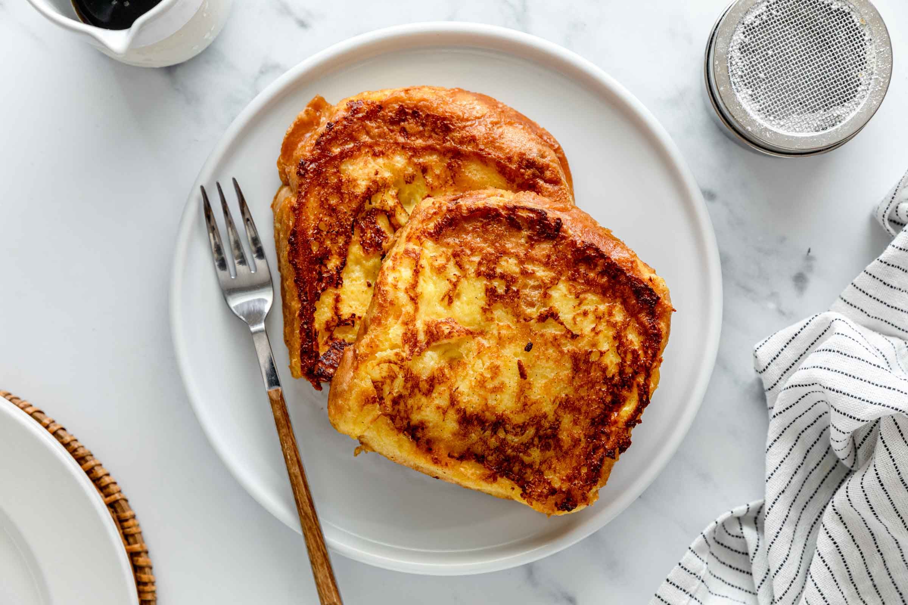

French Toast
Prep : 10 min | Cook : 20 min
--------------------------------------------------------
Ingredient List:
6 Thick Slices of Bread
2/3 Cup Milk
2 Eggs
1 tsp Vanilla Extract
1/4 tsp Ground Cinnamon
Salt
Butter
Instructions:
1.) Whisk milk, eggs, vanilla, cinnamon, and salt together.
2.) Over medium-high heat, butter pan.
3.) Coat bread in egg mixture and cook until golden.